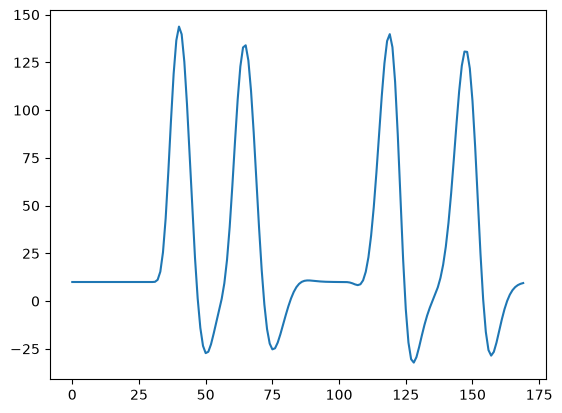
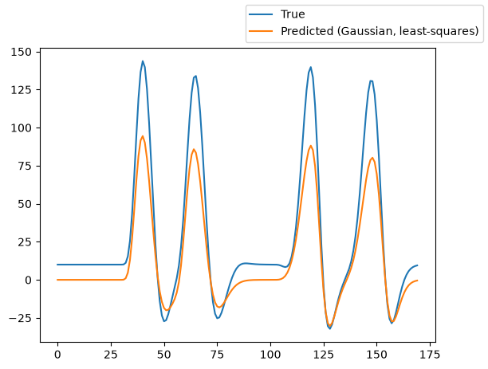
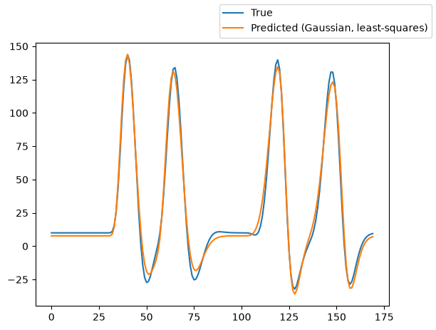
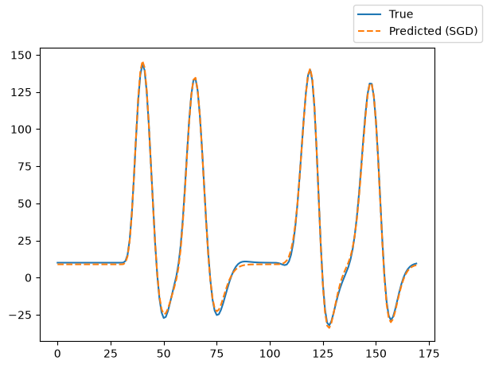

How to fit a Difference of Gaussians population receptive field model to simulated data¶
Author: Angel Daza (j.daza@esciencecenter.nl)
Difficulty: Beginner
This tutorial explains how to fit a Difference of Gaussians (DoG) population receptive field (pRF) model to simulated data.
A pRF model maps neural activity in a region of interest in the brain (e.g., V1 in the human visual cortex) to an experimental stimulus (e.g., a bar moving through the visual field). The DoG model extends the classic Gaussian pRF by subtracting a second, broader Gaussian from the first. This center-surround structure captures inhibitory surrounds that are commonly observed in early visual cortex.
Because prfmodel uses Keras for model fitting, we need to make sure that a backend is installed before we begin. In this tutorial, we use the TensorFlow backend.
import os
from importlib.util import find_spec
import pandas as pd
# Set keras backend to 'tensorflow' (this is normally the default)
os.environ["KERAS_BACKEND"] = "tensorflow"
# Print parameter DataFrames with three decimals
pd.set_option("display.precision", 3)
if find_spec("tensorflow") is None:
msg = "Could not find the tensorflow package. Please install tensorflow with 'pip install .[tensorflow]'"
raise ImportError(msg)
Defining the stimulus¶
Let’s start with the first step: Defining the stimulus. In practice, we recommend that users save the stimulus they use in an experiment to a file and load it to avoid mismatches between experiment and analysis. Because we use simulated data in this tutorial, we load an example stimulus that is included in the package. The stimulus simulates a bar moving in different directions through a two-dimensional visual field.
from prfmodel.examples import load_2d_prf_bar_stimulus
num_frames = 200 # Simulate 200 time frames
stimulus = load_2d_prf_bar_stimulus()
print(stimulus)
PRFStimulus(design=array[170, 128, 128], grid=array[128, 128, 2], dimension_labels=['y', 'x'])
When printing the stimulus object, we can see that it has three attributes. The design attribute defines how
the visual field changes over time. It has shape (num_frames, height, width), where height and width define the number of pixels at which the visual field is recorded. The grid attribute maps each pixel to its coordinate in the visual field (i.e., the degree of visual angle). Its last axis follows the axes of the design, so grid[..., 0] holds the vertical (y) coordinate and grid[..., 1] the horizontal (x) coordinate.
We can visualize the stimulus using animate_2d_stimulus.
from IPython.display import HTML
from prfmodel.plotting import animate_2d_prf_stimulus
ani = animate_2d_prf_stimulus(stimulus, interval=25) # Pause 25 ms between time frames
HTML(ani.to_html5_video())
Defining the DoG pRF model¶
Now that we defined our stimulus, we can create a DoG pRF model to predict a neural response to this stimulus.
The DoG2DPRFModel runs two Gaussian responses sharing the same center (mu_x, mu_y) but with
different widths (sigma_center for the center, sigma_surround for the surround). Each response is encoded with the
stimulus, the surround is subtracted from the center, and the combined response is convolved with a haemodynamic impulse
response:
For a surround-suppression model, amplitude_center > 0 (excitatory center) and amplitude_surround > 0 (inhibitory surround,
subtracted), with amplitude_surround < amplitude_center so the center response dominates.
from prfmodel.models.prf import DoG2DPRFModel
prf_model = DoG2DPRFModel()
To simulate a neural response to our stimulus with our Gaussian 2D pRF model, we need to define a set of parameters.
The list of parameters that need to be set to make model predictions can be obtained from the parameter_names property.
prf_model.parameter_names
['mu_y',
'mu_x',
'sigma_center',
'sigma_surround',
'amplitude_center',
'amplitude_surround',
'delay',
'dispersion',
'undershoot',
'u_dispersion',
'ratio',
'weight_deriv',
'baseline']
The parameters mu_x and mu_y define the center of the pRF. sigma_center and sigma_surround set the widths of the
center and surround Gaussians (a hard requirement is that sigma_surround must be larger than sigma_center). The parameters delay, dispersion,
undershoot, u_dispersion, ratio, and weight_deriv determine the haemodynamic impulse response; the two-gamma
parameters (delay, dispersion, undershoot, u_dispersion, ratio) default to the Glover HRF parameter set (see default_two_gamma_impulse_glover_hrf()), so
we only set weight_deriv here.
amplitude_center scales the center response (positive), amplitude_surround scales the surround that is subtracted
(positive, with amplitude_surround < amplitude_center), and baseline shifts the whole response. We store the
parameter values in a pandas.DataFrame.
import pandas as pd
true_params = pd.DataFrame(
{
"mu_x": [-2.1],
"mu_y": [1.45],
"sigma_center": [1.35],
"sigma_surround": [5.1], # sigma_surround should be larger than or equal to sigma_center
# delay, dispersion, undershoot, u_dispersion, and ratio use the default Glover HRF parameters
"weight_deriv": [-0.5],
"baseline": [10.0],
"amplitude_center": [1.2],
"amplitude_surround": [0.5], # amplitude_surround should be positive and less than amplitude_center
},
)
Using the “true” parameters, we simulate a response to our stimulus by making a prediction with our pRF model.
import matplotlib.pyplot as plt
simulated_response = prf_model(stimulus, true_params)
_ = plt.plot(simulated_response[0])

The predicted response contains increased activation followed by decreased activation compared to the baseline activity for each moving bar in our stimulus.
Fitting the pRF model¶
We will fit the DoG pRF model using a two-step approach.
In Step 1, we fit a vanilla Gaussian model to locate the pRF center (
mu_x,mu_y) and size (sigma) using a grid search and least squares to determine theamplitude.In Step 2, we initialize the DoG model parameters from the Gaussian fit in the following way:
mu_xandmu_ystay the same;sigmabecomessigma_centerandamplitudebecomesamplitude_center, we determine thatsigma_surroundshould be larger thatsigma_center. We then fine-tune the whole model it with SGD, constrainingamplitude_surround > 0.
Step 1: Fit the center Gaussian model¶
Let’s start with a grid search over mu_x, mu_y, and sigma using a plain
Gaussian2DPRFModel. This is much faster than searching over both sigma_center and sigma_surround
simultaneously, and gives us a good initialisation point for the DoG model.
import numpy as np
from prfmodel.models.prf import Gaussian2DPRFModel
# Step 1: fit a plain Gaussian model to locate the center and size of the pRF
gaussian_center_model = Gaussian2DPRFModel()
param_ranges_gaussian = {
"mu_x": np.linspace(-3.0, 3.0, 10),
"mu_y": np.linspace(-3.0, 3.0, 10),
"sigma": np.linspace(0.5, 3.0, 10),
# delay, dispersion, undershoot, u_dispersion, and ratio use the default Glover HRF parameters
"weight_deriv": [-0.5],
"baseline": [0.0],
"amplitude": [1.0],
}
For all three parameters, we defined ranges of 10 values, giving \(10 \times 10 \times 10 = 1000\)
parameter combinations to evaluate. Let’s construct the GridFitter and run the grid search.
from prfmodel.fitters import GridFitter
grid_fitter = GridFitter(
model=gaussian_center_model,
stimulus=stimulus,
compile_step=True, # Setting 'compile_step=True' speeds up the fitting
)
grid_history, grid_params = grid_fitter.fit(
data=simulated_response,
parameter_values=param_ranges_gaussian,
batch_size=20,
)
grid_params
| mu_x | mu_y | sigma | weight_deriv | baseline | amplitude | |
|---|---|---|---|---|---|---|
| 0 | -2.333 | 1.667 | 1.611 | -0.5 | 0.0 | 1.0 |
The grid search returns the best-matching combination. The estimates for mu_x, mu_y, and
sigma are close to the true values but constrained to the grid.
gaussian_pred_response = gaussian_center_model(stimulus, grid_params)
fig, ax = plt.subplots()
ax.plot(simulated_response[0], label="True")
ax.plot(gaussian_pred_response[0], label="Predicted (Gaussian, least-squares)")
fig.legend();

The Gaussian fit already captures the main shape of the response. Next we use least squares
to estimate amplitude and baseline.
Using least squares, we estimate the amplitude and baseline parameters of the
Gaussian model, which will seed the DoG initialisation.
from prfmodel.fitters import LeastSquaresFitter
ls_fitter = LeastSquaresFitter(model=gaussian_center_model, stimulus=stimulus)
ls_history, gaussian_center_params = ls_fitter.fit(
data=simulated_response,
parameters=grid_params,
slope_name="amplitude",
intercept_name="baseline",
)
gaussian_center_params
| mu_x | mu_y | sigma | weight_deriv | baseline | amplitude | |
|---|---|---|---|---|---|---|
| 0 | -2.333 | 1.667 | 1.611 | -0.5 | 7.748 | 1.439 |
The Gaussian least-squares fit adjusts the scale and baseline to match the simulated response.
gaussian_pred_response = gaussian_center_model(stimulus, gaussian_center_params)
fig, ax = plt.subplots()
ax.plot(simulated_response[0], label="True")
ax.plot(gaussian_pred_response[0], label="Predicted (Gaussian, least-squares)")
fig.legend();

Step 2: Fit the DoG model (include surround gaussian)¶
We now initialize a DoG model from the fitted Gaussian parameters.
init_dog_from_gaussian sets:
sigma_center = sigmasigma_surround = 5 × sigma_centeramplitude_center = amplitudeamplitude_surround= a small positive value (1e-3by default)
We then run SGD directly on the DoG model. To enforce the constraint that
amplitude_surround must be positive we pass a ParameterTransform(transform_fun=ops.log, inverse_fun=ops.exp)
adapter. The adapter maps amplitude_surround onto an unbounded scale for the optimizer and maps it back before
every prediction, so the model only ever sees a positive value no matter where the optimizer moves.
Starting amplitude_surround near zero with a large positive amplitude_center from the Gaussian fit
also ensures amplitude_surround < amplitude_center at initialization.
from prfmodel.models.prf import init_dog_from_gaussian
from prfmodel.fitters import SGDFitter
# Convert Gaussian fit to DoG starting parameters
dog_init_params = init_dog_from_gaussian(gaussian_center_params, sigma_ratio=5.0)
dog_init_params
| mu_x | mu_y | weight_deriv | baseline | sigma_center | sigma_surround | amplitude_center | amplitude_surround | |
|---|---|---|---|---|---|---|---|---|
| 0 | -2.333 | 1.667 | -0.5 | 7.748 | 1.611 | 8.056 | 1.439 | 0.001 |
from keras import ops
from prfmodel.fitters.adapter import Adapter, ParameterTransform
# Constrain amplitude_surround > 0 during SGD
# (amplitude_surround < amplitude_center is satisfied by initializing amplitude_surround near 0)
dog_adapter = Adapter(transforms=[
ParameterTransform(["amplitude_surround"], transform_fun=ops.log, inverse_fun=ops.exp),
])
sgd_fitter = SGDFitter(
model=prf_model,
stimulus=stimulus,
adapter=dog_adapter,
compile_step=True, # Setting 'compile_step=True' speeds up the fitting
)
sgd_history, sgd_params = sgd_fitter.fit(
data=simulated_response,
init_parameters=dog_init_params,
fixed_parameters=["weight_deriv"],
)
sgd_params
| mu_x | mu_y | weight_deriv | baseline | sigma_center | sigma_surround | amplitude_center | amplitude_surround | |
|---|---|---|---|---|---|---|---|---|
| 0 | -2.099 | 1.456 | -0.5 | 8.911 | 1.271 | 7.096 | 1.076 | 0.003 |
We can plot the predicted model response and see that it matches the original simulated response almost perfectly.
sgd_pred_response = prf_model(stimulus, sgd_params)
fig, ax = plt.subplots()
ax.plot(simulated_response[0], label="True")
ax.plot(sgd_pred_response[0], "--", label="Predicted (SGD)")
fig.legend();

Conclusion¶
In this tutorial, we showed how to fit a Difference of Gaussians (DoG) pRF model to simulated data using a two-step workflow.
In Step 1, we fitted a plain Gaussian model with a grid search and least squares to efficiently locate the pRF center and size.
In Step 2, we used init_dog_from_gaussian to seed the DoG model from the Gaussian fit. We set the surround size to five times the center size and initialized amplitude_surround to a small positive value.
We then ran SGD with a ParameterTransform that enforced amplitude_surround > 0 throughout optimisation. At each stage, we compared the predicted model response against the original simulated response to check the quality of the fit.
References¶
Zuiderbaan, W., Harvey, B. M., & Dumoulin, S. O. (2012). Modeling center–surround configurations in population receptive fields using fMRI. Journal of Vision, 12(3), 10. https://doi.org/10.1167/12.3.10